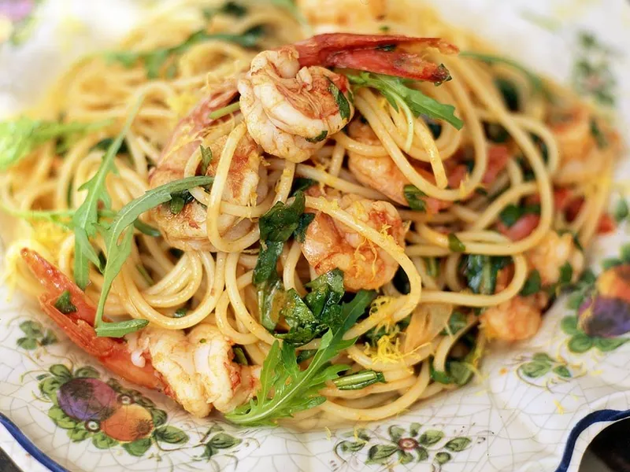

Jamie Oliver's prawn and rocket pasta
Serves 4, cook time 30 mins

Ingredients
- 455g dried spaghetti
- 2 cloves garlic
- 1-2 dried red chillies
- 400g peel raw prawns
- 1 small wineglass white wine
- 2 headed tbsp sun-dried tomato purée
- 1 lemon
- 1 handful of rocket
Method
- Cook your spaghetti in a large pan of salted boiling water according to the packet instructions.
- Meanwhile, peel and finely chop the garlic. Heat 3 good lugs of extra virgin olive oil in a large frying pan, then toss in the garlic and crumble in the chilli. As the garlic begins to colour, add the prawns and sauté them for a minute. Add the white wine and tomato purée, and simmer for a couple of minutes.
- Grate the zest of the lemon and roughly chop the rocket. When the pasta is ready, drain it in a colander, reserving a little of the cooking water.
- Toss the spaghetti with the sauce, squeeze in the lemon juice, add half the chopped rocket, adding a little of the reserved cooking water if you want to loosen the sauce a bit, and correct the seasoning with sea salt and black pepper.
- Divide between 4 plates and sprinkle with the grated lemon zest and the rest of the rocket leaves.
Back to recipes